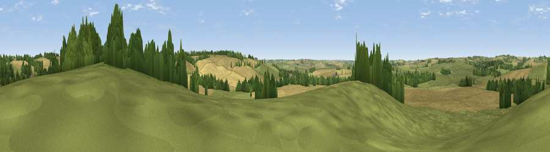

Viewpoint near Blaston
#32134 in England · top 41% of its area beats it · near BlastonWhere it is
The exact computed spot (SP 80275 94925). Click the marker for map links.
The view, rendered

A 360° render of this exact spot computed from the terrain model, tree cover and land cover — summer colours, afternoon light, calibrated against photographs of famous viewpoints. Real trees, hedges and buildings will differ in detail.
The panorama
Grey silhouette: terrain skyline in each direction (720 bearings, Earth curvature and refraction included). Dashed green: skyline with trees (+15 m) and buildings (+8 m) as obstacles. Blue strip: how far the ground is visible on each bearing.
Where the view opens
Wedge length = distance to the farthest visible ground on that bearing (vegetation-aware). Rings at 10, 25 and 50 km.
What fills the view
49% cropland · 41% grassland · 10% woodland
Angular shares of the visible panorama (visual magnitude), not map area. Landscape diversity 0.42 (0–1 Shannon).
Key numbers
More beautiful places nearby
The staircase of upgrades: each row has a higher view potential than everything closer. Driving times are estimates from straight-line distance, calibrated against real road routing — check an actual route before setting out.
| Place | Direction | Drive | Score |
|---|---|---|---|
| Viewpoint near Blaston | SSE · 2 km | ~5 min | 47.2 |
| Viewpoint near East Norton | NNW · 5 km | ~12 min | 49.6 |
| Robin-a-Tiptoe Hill | NNW · 10 km | ~19 min | 54.1 |
| Whatborough Hill | NNW · 12 km | ~22 min | 55.9 |
| Viewpoint near Billesdon | NW · 13 km | ~24 min | 56.8 |
| Viewpoint near Cold Newton | NW · 13 km | ~24 min | 57.3 |
| Viewpoint near Burrough on the Hill | NNW · 18 km | ~31 min | 66.0 |
| Old John | WNW · 32 km | ~50 min | 70.3 |
52.54627, -0.81765 · source: screening · position refined by local search. Computed location — check access rights before visiting.